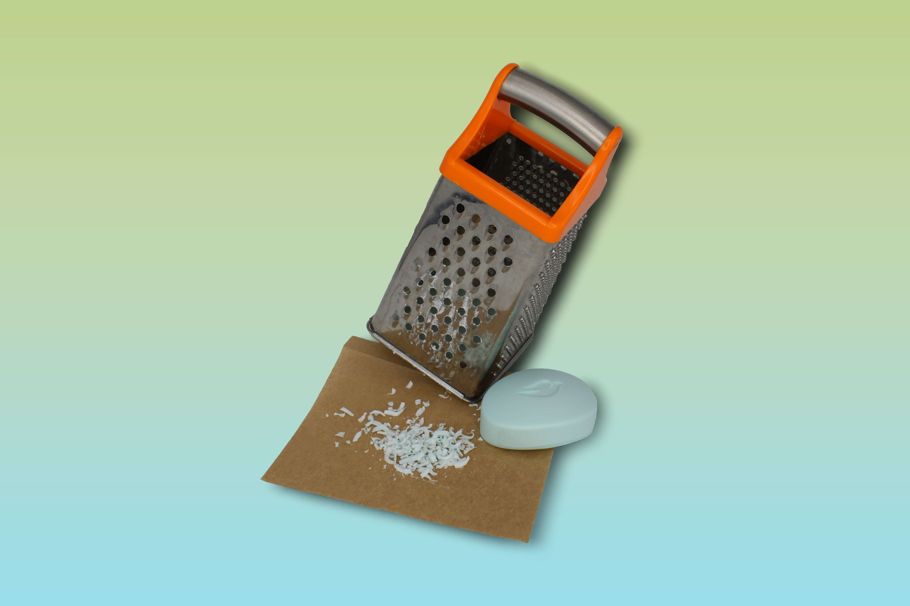
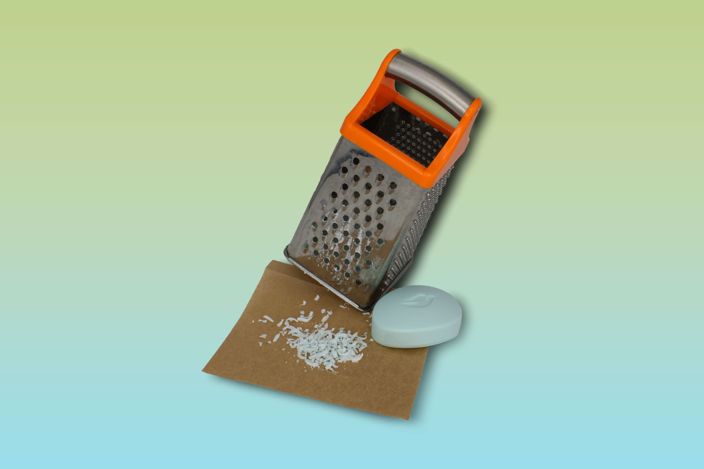
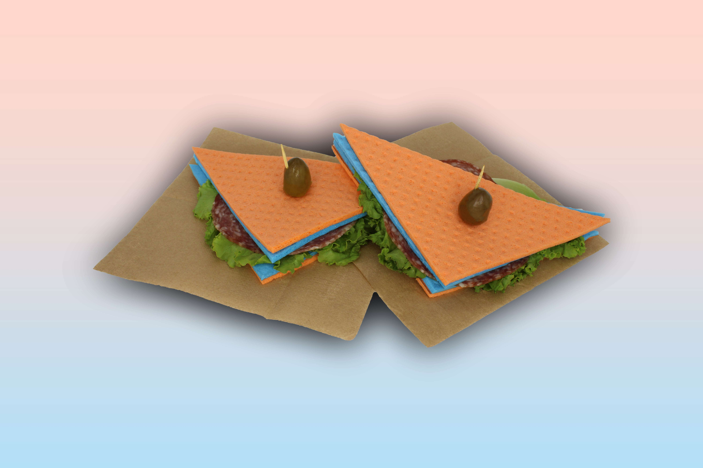
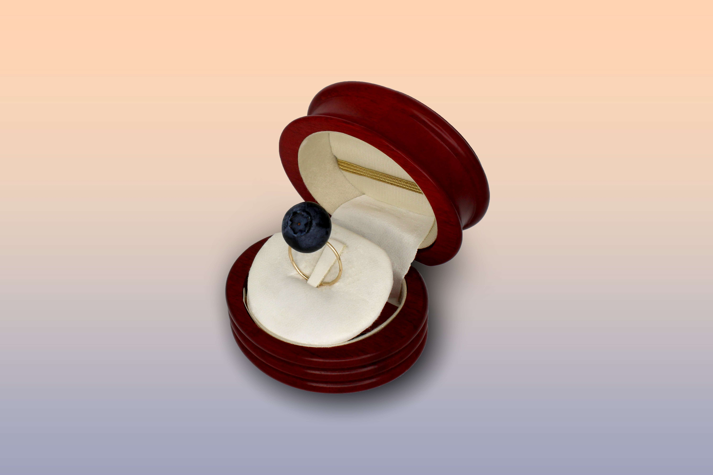
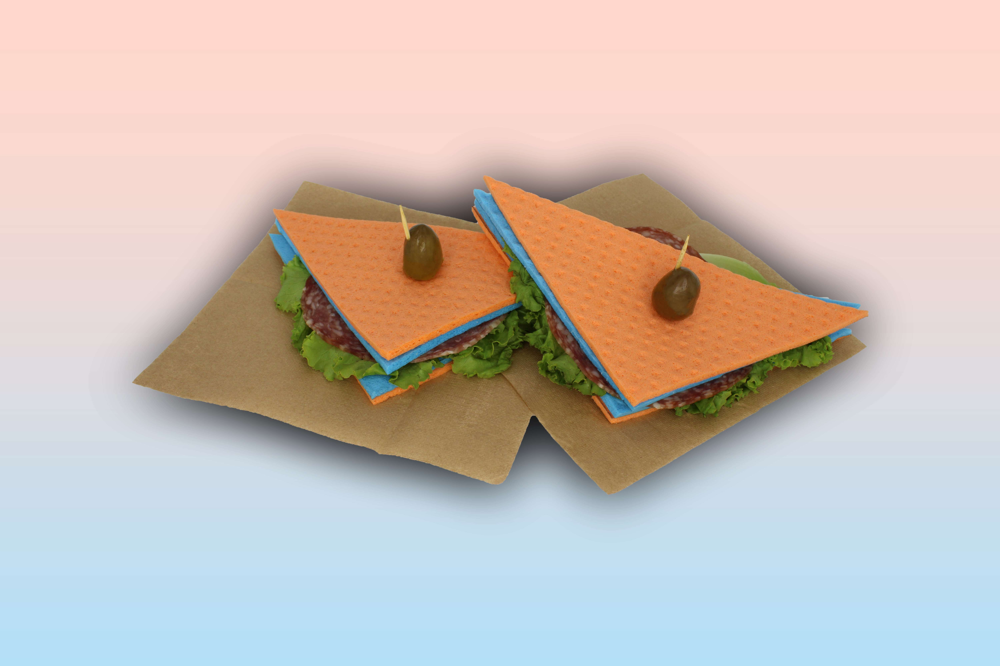
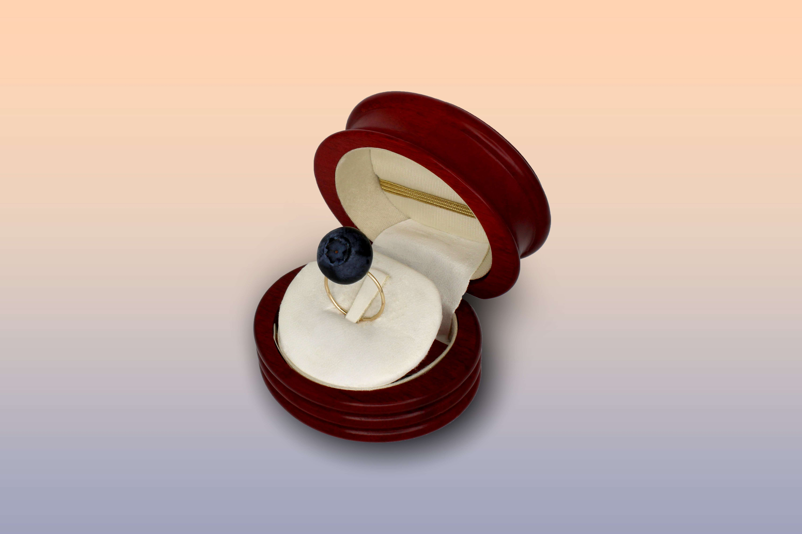

FOTOGRAFIE
CONTAMINAZIONE
Il mondo è in continua trasformazione, tutto cambia: gli esseri umani, i paesaggi, le tecnologie.
Da questa osservazione ho deciso di provocare io stessa la trasformazione e creare una realtà parallela
attraverso l’associazione antinomica e umoristica di cibi e oggetti di uso comune.

 


 


